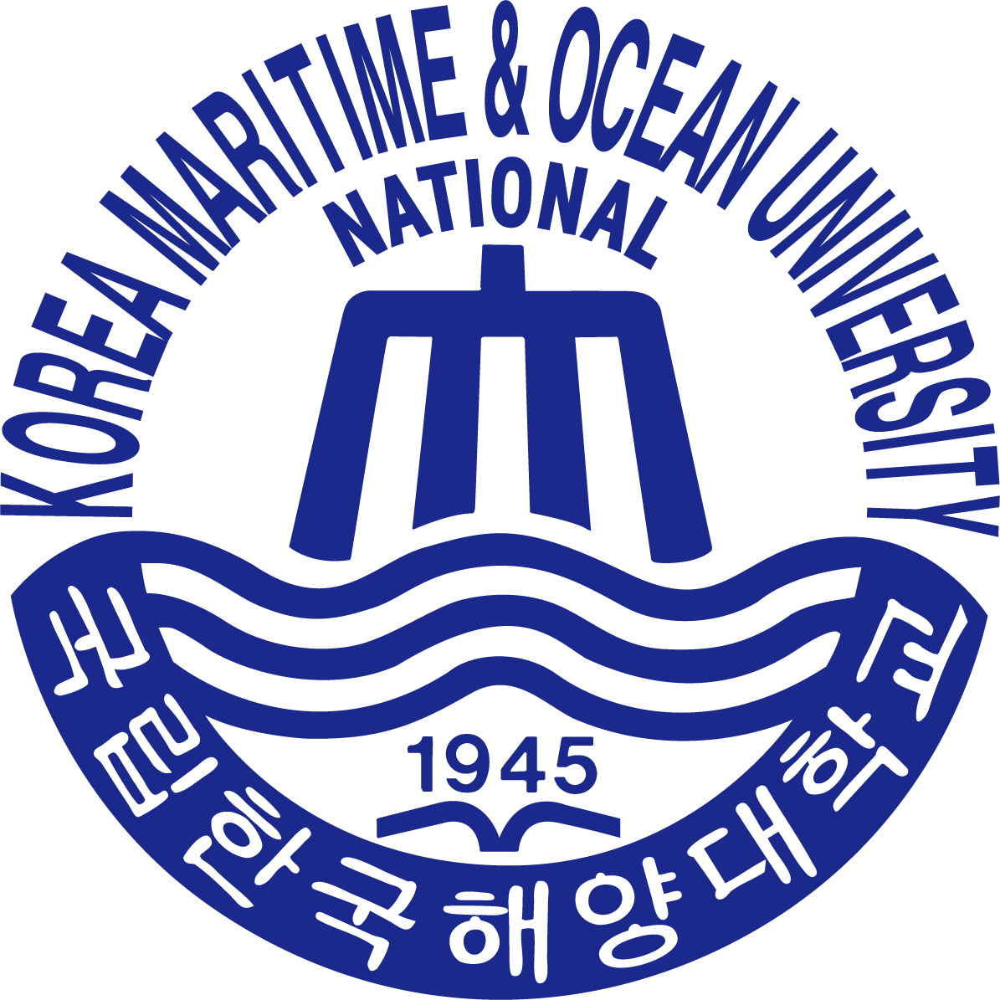
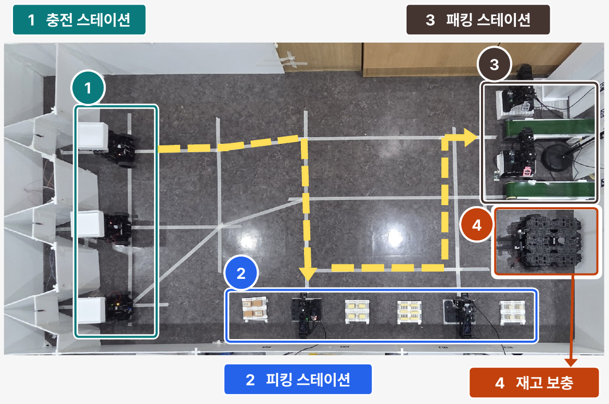
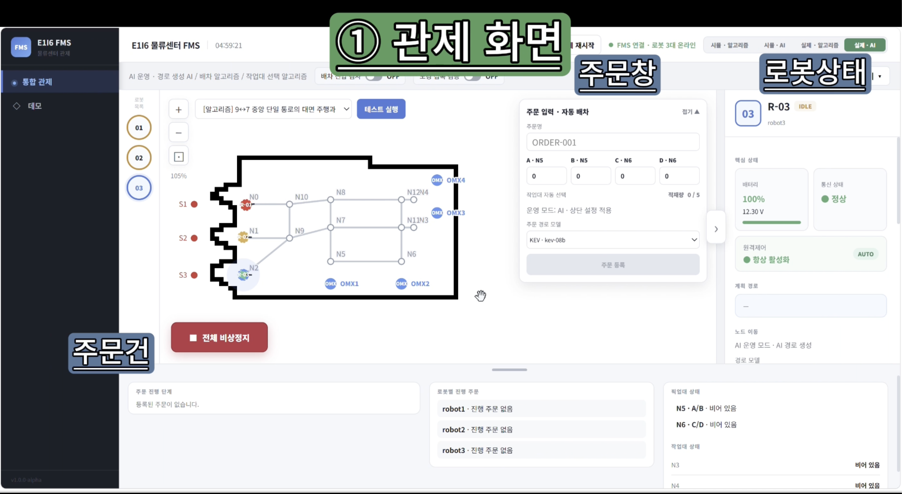
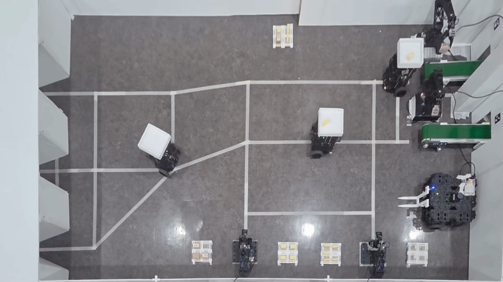
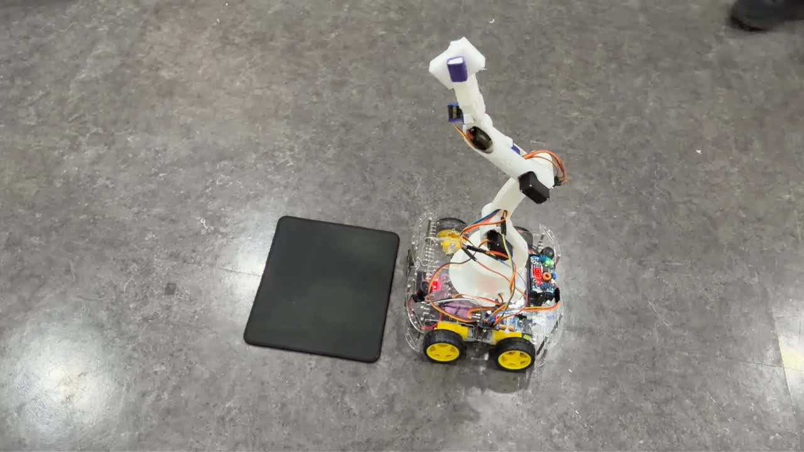
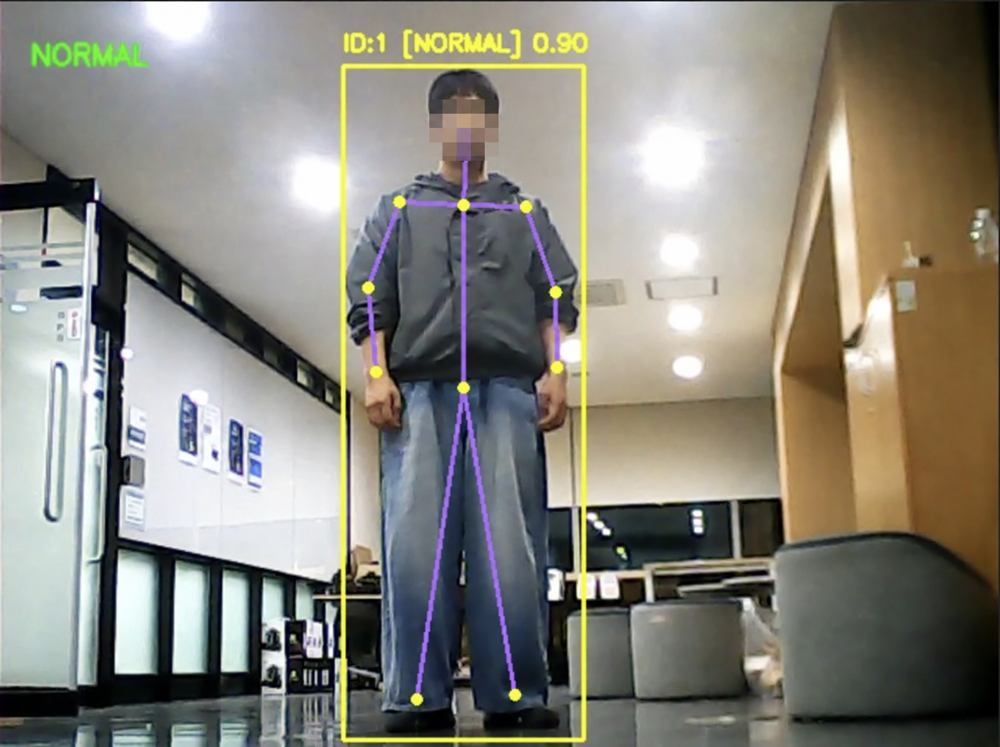
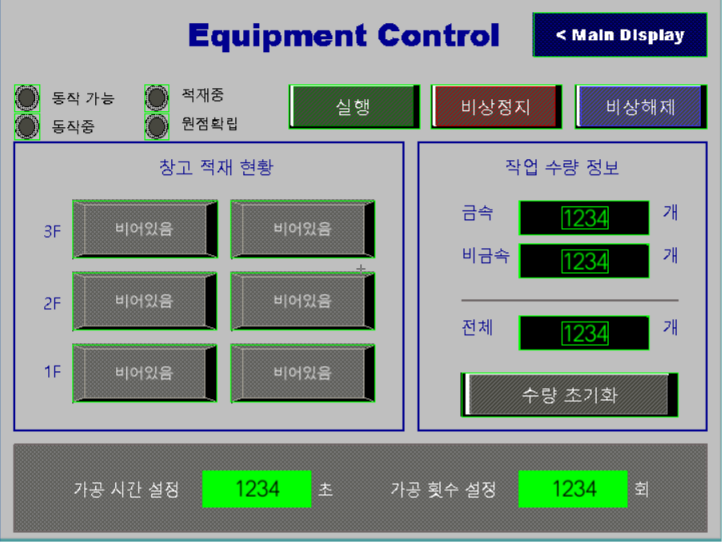

프로그래밍 언어
CC++Python
ROBOTICS SOFTWARE PORTFOLIO
로봇 SW임베디드 제어AMR 자율주행
바다에서는 선박의 항로를, 지금은 로봇의 경로를 다룹니다.
ROS2 기반 AMR 주행과 다중 로봇 교통조정, 관제 연동을 구현했습니다.

AI융합 로봇SW 개발자 과정대한상공회의소 서울기술교육센터2026.04—2026.11 · 수료
에이치라인해운2등 항해사 · 2021.06—2024.02
프로젝트 경진대회 대상 · 2026.11.05대한상공회의소 서울기술교육센터
01 / SKILLS & EXPERIENCE
CC++Python
ROS2Nav2TFEKFGazeboIsaac Sim
STM32ESP32Raspberry PiHAL
YOLOOpenCVQuantization
PLCHMIGX Works2
GitGitHubJiraConfluence
Git GitHub Jira Confluence
02 / PROJECTS
AMR 자율주행부터 교통조정·관제 연동까지
여러 대의 AMR과 로봇팔을 연동해 주문·피킹·이송·패킹 공정을 수행하는 물류 자동화 시스템입니다.



모바일 명령에서 주행·티칭·데이터 보존까지
4륜 이동 플랫폼에 5자유도 로봇팔을 탑재하고, Flutter 앱에서 주행·관절 조작·티칭을 통합 제어하는 모바일 매니퓰레이터입니다. 기록한 동작과 설정을 STM32 내부 Flash에 저장해 전원을 다시 켠 뒤에도 불러와 재생할 수 있도록 구현했습니다.

온디바이스 AI 기반 자세 인식과 대상 추적
라즈베리파이에서 영상 인식과 상황 판단을 수행하는 온디바이스 AI 순찰 로봇입니다. YOLO Pose로 사람의 자세를 분석해 위험 행동·낙상 의심 상황의 대상을 선정하고, STM32 보드의 주행 제어와 연동해 추적하도록 구현했습니다.

공정 순서와 비상정지·복귀 동작 구성
유도형 근접센서로 금속·비금속을 구분해 창고에 적재 및 배출하는 PLC 자동화 시스템입니다. 재료 투입·가공·분류·적재·배출 시퀀스와 비상정지 기능을 구현했습니다.


03 / EXPERIENCE & EDUCATION